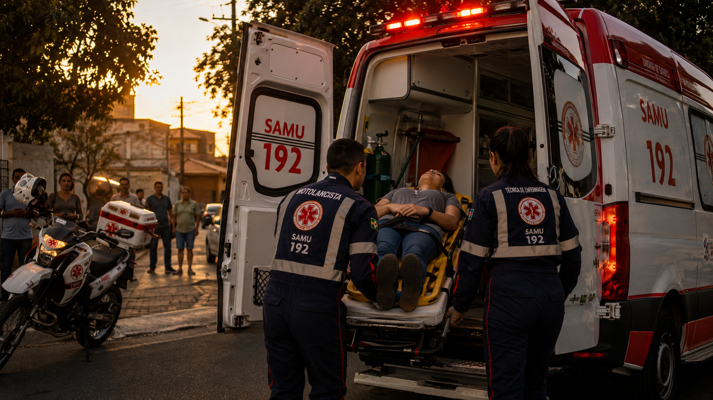
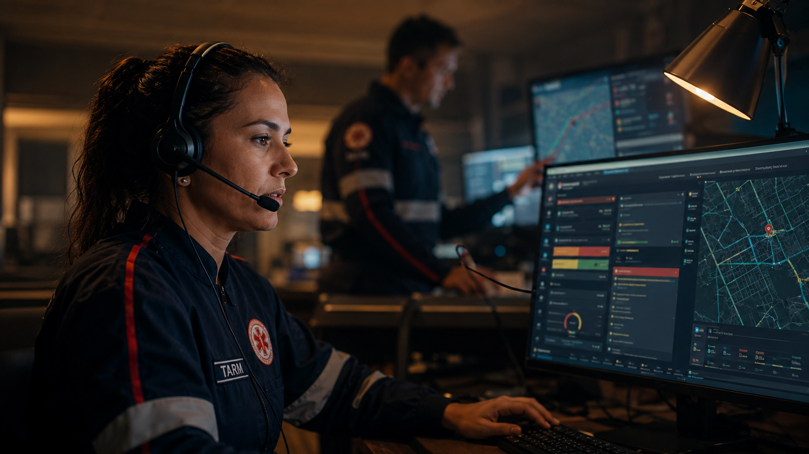

Imagem ilustrativa
Avaré · cidade-sede do novo consórcio
A maior cidade do par, sede da central e da UTI móvel — e Manduri com base própria.
Hoje Avaré carrega a operação da regional (AMVAPA) sem controlar a regulação, e paga caro por isso. A saída é formar um consórcio próprio com Manduri, o município vizinho: juntas, elas habilitam a estrutura no Ministério da Saúde e trazem os repasses federais de volta. A Samais opera tudo — três ambulâncias 24 horas, sendo uma estacionada em Manduri, e a UTI móvel com equipe própria. A central de regulação regional segue recebendo o 192. Um único contrato, rateado entre as duas.
Avaré e Manduri são vizinhas, somam 106.321 habitantes e hoje dependem de uma estrutura regional que atende 17 cidades ao mesmo tempo. A proposta é as duas formarem um consórcio próprio de urgência — com a central de chamados em Avaré, a maior cidade e a que já abriga a estrutura do SAMU.
A maior cidade do par, onde ficam a base, a UTI móvel e a operação. Duas ambulâncias 24 horas, mais reserva, a UTI móvel e a central de gestão.
Município vizinho de 9.871 habitantes. No consórcio, ganha ponto de apoio, acesso à UTI móvel e à regulação qualificada — e sua cota nos repasses federais. O que o consórcio destrava vale muito mais do que uma ambulância isolada poderia.
Só Avaré declara R$ 491 mil por mês com o SAMU — e esse número já é parcial: manutenção na frota geral da Prefeitura, combustível na garagem municipal, médicos do município cedidos à central e à UTI móvel, insumos no almoxarifado compartilhado. Cada cidade do bloco carrega pedaços de custo que não aparecem somados. O resultado é uma operação que parece barata no papel e roda no limite na rua.
A estrutura regional que atende o par hoje cobre 17 cidades com uma única UTI móvel, ambulâncias paradas e equipes cobrindo buracos de escala. Não é má vontade — é uma conta que não fecha para quem precisa do socorro perto.
Manutenção na frota geral, combustível na garagem municipal, médicos cedidos, insumos no almoxarifado compartilhado. E um serviço de urgência disputando fila de oficina com carros comuns — quando ambulância parada significa cidade descoberta.
Avaré e Manduri formam o próprio consórcio de urgência: duas ambulâncias cobrindo as duas cidades, equipe profissional e UTI móvel própria operada pela Samais. Custo rateado entre as duas.
Na base de Avaré, das três ambulâncias, só uma está em condições de rodar — sem reserva. A UTI móvel é única para as 17 cidades, e a regulação, fora do controle da cidade, tem gerado gargalos. O custo parece menor do que é porque está fragmentado: cada pedaço vive numa pasta diferente do orçamento.
| Unidade | Ano / modelo | Situação |
|---|---|---|
| USB 01 | 2012 · Peugeot Boxer | Parada |
| USB 02 | 2015 · Renault Master | Parada |
| USB 03 | 2024 · Renault Master | Operante |
| USA regional | Suporte avançado | Única para os 17 municípios |
| Regime de escala | 12×36 | Combustível 349,8 litros/mês |
Das três USB declaradas, apenas a Renault Master 2024 está operante. As de 2012 e 2015 estão paradas. Quando a única viatura está empenhada, Avaré fica sem cobertura própria de suporte básico.
A base reúne condutores socorristas, técnicos de enfermagem, enfermeiro, auxiliares de serviços gerais, técnica auxiliar de RM e um coordenador cedido — em escala 12×36.
A USB de Avaré realiza em média 152 atendimentos por mês (faixa 131–168). No período de referência, o perfil foi de maioria clínica, seguido de trauma, psiquiátrico e obstétrico.
| Equipe da base | Quantidade | Observação |
|---|---|---|
| Condutores socorristas | 6 | Escala 12×36 |
| Técnicos de enfermagem | 5 | Assistência direta |
| Enfermeiro | 1 | Carga de 30h |
| Auxiliares de serviços gerais | 2 | Apoio |
| Técnica auxiliar de RM | 1 | Apoio administrativo |
| Coordenador de base | 1 | Servidor cedido |
| Total na base | 16 | Obstétricas no período: 38 |
A fragilidade da operação atual aparece onde mais importa: na hora de chegar ao paciente grave. Frota insuficiente, suporte avançado único e falhas de regulação se somam — com um óbito já documentado pela própria Secretaria de Saúde.
Com uma única viatura operante e sem reserva, quando a USB de Avaré é empenhada o município fica sem cobertura própria de suporte básico até que ela se libere.
Um só suporte avançado para 17 municípios e 312 mil habitantes. Cada acionamento grave depende da disponibilidade dessa única unidade — impacto direto no tempo-resposta.
Com uma UTI móvel única e frota mínima, a central é forçada a escolhas impossíveis: casos graves sem viatura para liberar, com óbito já documentado pela SMS de Avaré. Não é falha das pessoas — é falta de estrutura.
| Custo oculto | Onde está hoje | Na proposta Samais |
|---|---|---|
| Manutenção da frota | Na fila da "frota geral" do município, junto com carros comuns | Oficina e fila dedicadas — urgência não espera |
| Combustível | Garagem da Prefeitura, sem conta separada | Linha própria, para a frota completa rodando |
| Médicos da central e da UTI móvel | Efetivos de Avaré cedidos + contratações avulsas do consórcio | Equipe médica própria, contratada e fixa |
| Insumos | Almoxarifado Central da saúde, compartilhado | Almoxarifado dedicado ao SAMU |
| Imóvel da central e da base | Água, luz, IPTU e manutenção pela Prefeitura | Permanece com o poder público (sem custo novo) |
| Coordenação | Servidor cedido, em outra pasta | Coordenação própria, dentro do contrato |
| Passivo trabalhista | TAC firmado com o MPT | Equipe 100% CLT elimina a causa do risco |

Uma proposta única: as duas cidades formam o consórcio, e a Samais entrega a operação completa funcionando — três ambulâncias 24 horas (duas em Avaré e uma na base de Manduri) mais reserva, com acesso de ambas as cidades à UTI móvel e à regulação, equipe profissional de ~59 pessoas, gestão com tecnologia e a UTI móvel própria operada pela Samais. O consórcio manda; a Samais opera.
Condutores socorristas, técnicos de enfermagem e enfermeiros supervisores em cada cidade, mais a equipe própria da UTI móvel — todos contratados, treinados e fixados, com a escala 24 horas coberta de verdade e treinamento contínuo (cursos e workshops) como compromisso de contrato.
As viaturas paradas passam por laudo técnico e voltam a rodar. Três ambulâncias 24 horas — duas em Avaré e uma na base de Manduri — mais reserva e a UTI móvel própria — com manutenção, combustível e insumos dedicados, fora da fila geral.
Cada chamado e cada viatura rastreados em tempo real com o CoPilot, painel aberto para os dois prefeitos — com a UTI móvel própria já integrada à operação desde a largada.

O valor abaixo é o total da operação regional — sem rubricas escondidas e sem custos espalhados pelas pastas de cada prefeitura. A verba federal que o serviço já recebe abate a conta do bloco, e o restante é rateado entre as cidades como o consórcio já faz hoje. Números de referência, a calibrar na diligência.
| Rateio de referência entre as cidades | População | Valor/mês |
|---|---|---|
| Avaré — sede: 2 ambulâncias 24h + reserva + UTI móvel + gestão | 96.450 hab | ~R$ 916 mil |
| Manduri — base descentralizada: ambulância 24h na cidade + acesso à UTI móvel e regulação | 9.871 hab | ~R$ 284 mil |
| Consórcio (rateio por população, a pactuar entre os prefeitos) | 106.321 hab | R$ 1,22 mi |
| Comparação honesta | Hoje | Com o consórcio |
|---|---|---|
| Ambulâncias do par em condições de rodar | 1 (sem reserva) | 2 + 1 reserva |
| UTI móvel | 1 dividida com 17 cidades | própria do par, equipe Samais, 24h |
| Acesso de Manduri à estrutura | socorro vem de longe | ambulância 24h na cidade + UTI móvel + regulação |
| Cobertura no descanso da equipe | viatura para | coberta |
| Cota de Avaré | R$ 1,0 mi se sozinha | ~R$ 916 mil no consórcio |
| Custo | espalhado, ninguém soma | um contrato, tudo dentro |
A diferença está em entregar a operação funcionando, com custo aberto e conformidade plena — não um relatório. Cada diferencial responde a um ponto crítico da operação que as duas cidades vivem hoje.
A Samais opera o serviço, não vende consultoria. O custo é aberto linha a linha, sem rubricas escondidas — o gestor enxerga cada item do que paga.
Regulação, despacho e telemetria em plataforma própria, com rastreabilidade em tempo real — atacando diretamente as falhas de regulação que hoje custam vidas.
Equipe CLT no piso, com fim dos passivos trabalhistas, e Núcleo de Educação Permanente estruturado (NR-32, SAVC). Autonomia municipal sobre o próprio serviço.
Os dois prefeitos firmam o protocolo de intenções do novo consórcio de urgência — o pontapé formal, com apoio técnico da Samais no desenho.
Cada câmara municipal autoriza por lei; o consórcio ganha estatuto, CNPJ e contrato de rateio pactuado entre as duas cidades.
O consórcio registra central, UTI móvel e ambulâncias junto ao Ministério da Saúde — o que ativa a verba federal mensal do SAMU. A Samais conduz a papelada junto.
Contratação pela Lei 14.133/2021 e implantação por fases, com transição planejada — o serviço não para um dia sequer durante a mudança.
Duas cidades, um consórcio, o socorro em casa — e chegando a tempo.
Três ambulâncias 24 horas, uma delas na base de Manduri, UTI móvel própria, gestão com tecnologia e um único contrato com o custo todo aberto — calibrado ao dado real das duas cidades em diligência de campo.